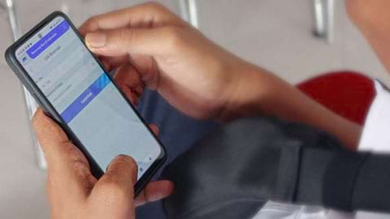
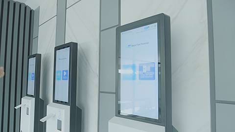
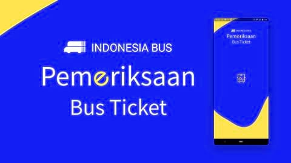

Business Portfolio

Sistem Tiket dan Reservasi
Produk dan layanan andalan kami lainnya meliputi sistem pemesanan dan penjualan tiket. Melalui solusi ini, kami memberikan pengalaman pemesanan yang efisien dan andal kepada pelanggan. Dengan teknologi modern, layanan tiket kami menawarkan kemudahan dalam perencanaan perjalanan dan memberikan fleksibilitas dalam pembelian tiket dengan aman dan nyaman.
Smart Terminal-

Laporan & statistik memberi anda analisis bisnis penting terkini
Laporan dan statistik menawarkan informasi analisis bisnis terkini yang penting bagi anda, dan dengan memanfaatkan data ini, anda dapat lebih memahami kinerja bisnis dan membuat keputusan yang lebih tepat secara strategis. -

Layanan reservasi offline melalui vending machine dan loket tiket
Kami menawarkan fasilitas pemesanan offline melalui vending (kiosk) dan layanan di loket tiket. Melalui opsi ini, pelanggan dapat dengan mudah memesan layanan tanpa memerlukan koneksi online. Fasilitas reservasi ini dirancang untuk memberikan kemudahan akses dan efisiensi dalam bertransaksi dan memastikan pelanggan mendapatkan pengalaman pemesanan tiket yang lancar dan efisien.
Sistem ini sesuai untuk
Transportation
Entertainment
Restaurant & Cafe
Experience
Our Projects

Kami melaksanakan proyek modernisasi terminal Indonesia, di mana terdapat dua terminal Indonesia yang sudah direalisasikan yaitu terminal Kampung Rambutan, Jakarta Timur dan terminal Leuwipanjang, Bandung. Dalam proyek ini kami menyediakan perbaikan pada bangunan, fasilitas dan sistem, dengan salah satu sistem yang disediakan adalah sistem tiket dan reservasi online.
-

Vending Machine
Sistem yang berfungsi untuk mencetak tiket, memesan tiket secara mandiri dengan menggunakan metode pembayaran non tunai. -

Website
Sebuah sistem yang berfungsi untuk pemesanan tiket secara online yang didukung dengan sistem pembayaran online, selain itu juga berfungsi untuk pembatalan tiket. Smart Terminal -

Sistem Manajemen Loket
Sistem Penjualan Tiket dari agen loket yang berfungsi untuk pemesanan tiket, penerbitan tiket, pembatalan tiket dan pencetakan ulang tiket. Sistem pembayaran pada loket tiket dapat menggunakan metode tunai maupun non tunai. -

Aplikasi Pengemudi
Aplikasi ini digunakan bagi kondektur atau pengemudi bus untuk melakukan pengecekan tiket boarding yang dapat dipindai melalui QR/Barcode. Melalui aplikasi pengemudi ini, pengemudi dapat mengetahui jumlah penumpang sesuai jumlah tiket yang dipesan secara real time.